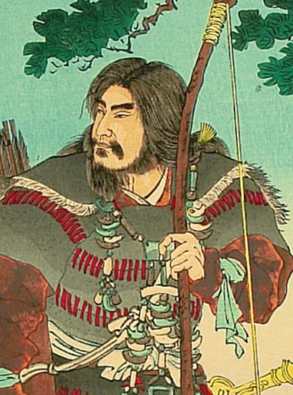
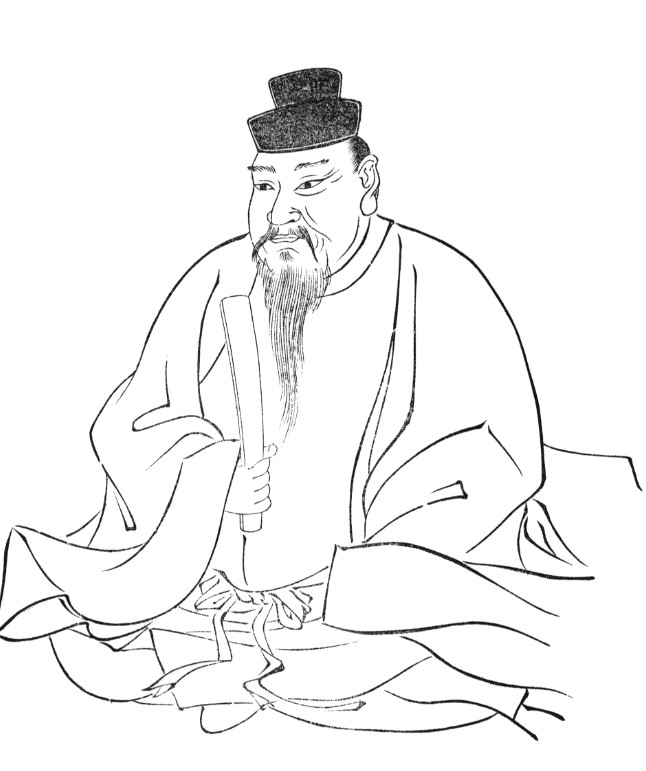
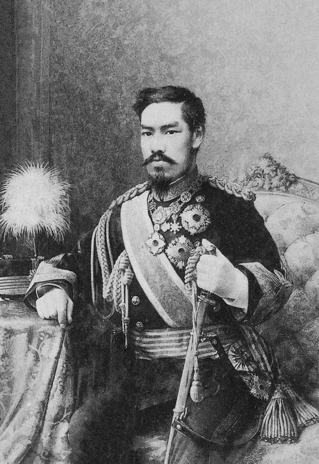
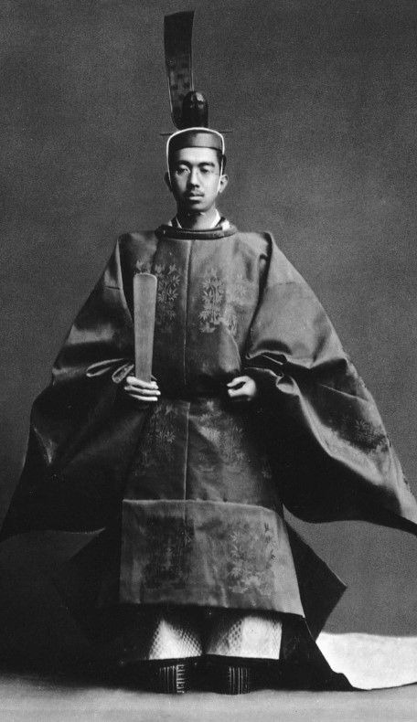
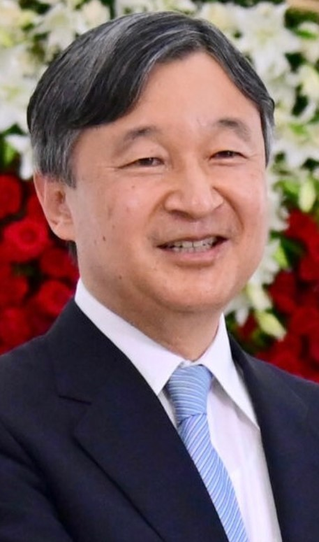

737 - Narozen jako Yamabe, syn císaře Kōnina a Takano no Niigasy (původ z klanu přistěhovalců z korejského království Baekje).
773 - Díky podpoře Fujiwary no Momokawy je jmenován korunním princem.
781 - Nastupuje nea trůn jako císař Kanmu ve věku 45 let.
782 - Vražda Fujiwary Tanetsugu (vedoucího výstavby nového hlavního města). Princ Sawara (jeho mladší bratr) je sesazen a zemře za záhadných okolností
794 - Kvůli ověrám o duchovní pomstě Sawary přesouvá hlavní město do Heian-kyō (dnešní Kyōto)
802 - Jmenuje Sakanoue no Tamuramaro, který potlačuje odpor Emishi a staví hrad Isawa (dnešní prefektura Iwate).
Jimmu (神武天皇)
* 13. února 711 př.n.l. † 9. dubna 585 př.n.l.
Byl první japonský císař který v roce 660 př.n.l. sjednotil Japonsko.
Rodiče: Otec - Ugajafukiaezu Matka - Tamajori-hime
Tento císař není historicky doložený
Ódžin (応神天皇)
* 201 † 310
Je první historicky doložený císař.
Rodiče: Otec - Čúai-tenno Matka - Jingū-kōgō
Byl 15. japonským císařem
Kanmu (桓武天皇)
Meidži (明治天皇)
* 3. listopadu 1852 † 30. července 1912
Za jeho vlády zanikla společenská třída samurajů.
Rodiče: Otec - Kómei-tenno Matka - Jošiko Nakajama
Byl 122. japonským císařem
Hirohito (昭和天皇) (Posmrtně Šówa)
* 29. dubna 1901 † 7. ledna 1989
Vládl nejdéle ze všech Japonských císařů.
Rodiče: Otec - Taišó-tenno Matka - Sadako Kudžó
Byl 124. japonským císařem
Naruhito (徳仁)
* 23.února 1960
Je současný Japonský císař
Rodiče: Otec - Akihito Matka - Mičiko Šóda
Je 126. japonským císařem
Odkazy
Zdroje
Encyclopedia Nipponica (日本大百科全書)
commons.wikimedia.org